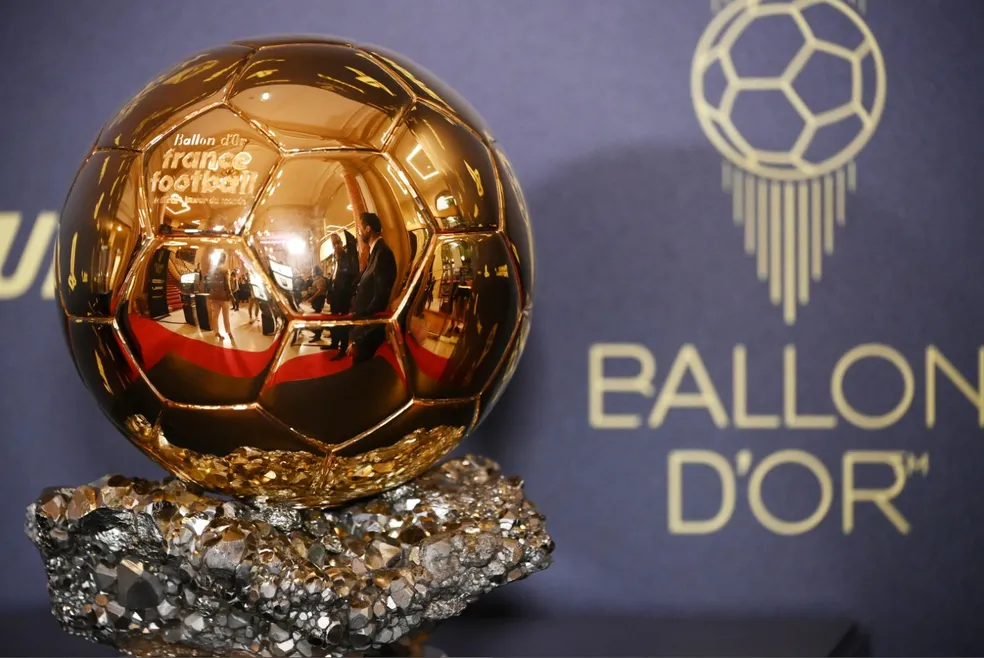

Olhe também nossos outros sites!
Bola de Ouro é o prêmio dado para o melhor jogador ou jogadora do ano. Ou seja, reporteres, capitães de times e seleções, treinadores e comentaristas votam nos 30 melhores jogadores do ano. O mais votado ganha o prêmio.
| Ganhador | Ano | Time do ganhador | Nacionalidade |
|---|---|---|---|
| Stanley Matthews | 1956 | Blackpool | Inglaterra |
| Alfredo Di Stefano | 1957 | Real Madrid | Argentina |
| Raymond Kopa | 1958 | Real Madrid | França |
| Alfredo Di Stefano | 1959 | Real Madrid | Argentina |
| Luis Suarez | 1960 | Barcelona | Espanha |
| Omar Sivori | 1961 | Juventus | Itália |
| Josef Masopust | 1962 | Dukla Praque | Tchecoslováquia |
| Lev Yashin | 1963 | Dynamo Moscou | União Soviética |
| Denis Law | 1964 | Manchester United | Escócia |
| Eusébio | 1965 | Benfica | Portugal |
| Bobby Charlton | 1966 | Manchester United | Inglaterra |
| Florian Albert | 1967 | Ferencvaros | Hungria |
| George Best | 1968 | Manchester United | Irlanda do Norte |
| Giannia Rivera | 1969 | Milan | Itália |
| Gerd Muller | 1970 | Bayern de Munique | Alemanha Ocidental |
| Johan Cruyff | 1971 | Ajax | Holanda |
| Franz Beckenbauer | 1972 | Bayern de Munique | Alemanha Ocidental |
| Johan Cruyff | 1973 | Barcelona | Holanda |
| Johan Cruyff | 1974 | Barcelona | Holanda |
| Oleg Blokhin | 1975 | Dínamo Kiev | União Soviética |
| Franz Beckenbauer | 1976 | Bayern de Munique | Alemanha Ocidental |
| Allan Simonsen | 1977 | Borussia Mönchengladbach | Dinamarca |
| Kevin Keegan | 1978 | Hamburgo | Inglaterra |
| Kevin Keegan | 1979 | Hamburgo | Inglaterra |
| Karl-Heinz Rummeningge | 1980 | Bayern de Munique | Alemanha Ocidental |
| Karl-Heinz Rummeningge | 1981 | Bayern de Munique | Alemanha Ocidental |
| Paolo Rossi | 1982 | Juventus | Itália |
| Michel Platini | 1983 | Juventus | França |
| Michel Platini | 1984 | Juventus | França |
| Michel Platini | 1985 | Juventus | França |
| Igor Belanov | 1986 | Dínamo Kiev | União Soviética |
| Ruud Gullit | 1987 | Milan | Holanda |
| Marco Van Basten | 1988 | Milan | Holanda |
| Marco Van Basten | 1989 | Milan | Holanda |
| Lothar Matthaus | 1990 | Inter de Milão | Alemanha Ocidental |
| Jean-Pierre Papin | 1991 | Marseille | França |
| Marco Van Basten | 1992 | Milan | Holanda |
| Roberto Baggio | 1993 | Juventus | Itália |
| Histo Stoichkov | 1994 | Barcelona | Bulgária |
| George Weah | 1995 | Milan | Libéria |
| Matthias Sammer | 1996 | Borussia Dortmund | Alemanha |
| Ronaldo Fenômeno | 1997 | Inter de Milão | Brasil |
| Zinedine Zidane | 1998 | Juventus | França |
| Rivaldo | 1999 | Barcelona | Brasil |
| Luis Figo | 2000 | Real Madrid | Portugal |
| Michael Owen | 2001 | Liverpool | Inglaterra |
| Ronaldo Fenômeno | 2002 | Real Madrid | Brasil |
| Pavel Nedved | 2003 | Juventus | República Tcheca |
| Andriy Shevchenko | 2004 | Milan | Ucrânia |
| Ronaldinho Gaúcho | 2005 | Barcelona | Brasil |
| Fabio Cannavaro | 2006 | Real Madrid | Itália |
| Kaká | 2007 | Milan | Brasil |
| Cristiano Ronaldo | 2008 | Manchester United | Portugal |
| Lionel Messi | 2009 | Barcelona | Argentina |
| Lionel Messi | 2010 | Barcelona | Argentina |
| Lionel Messi | 2011 | Barcelona | Argentina |
| Lionel Messi | 2012 | Barcelona | Argentina |
| Cristiano Ronaldo | 2013 | Real Madrid | Portugal |
| Cristiano Ronaldo | 2014 | Real Madrid | Portugal |
| Lionel Messi | 2015 | Barcelona | Argentina |
| Cristiano Ronaldo | 2016 | Real Madrid | Portugal |
| Cristiano Ronaldo | 2017 | Real Madrid | Portugal |
| Luka Modric | 2018 | Real Madrid | Croácia |
| Lionel Messi | 2019 | Barcelona | Argentina |
| Lionel Messi | 2021 | Barcelona | Argentina |
| Karim Benzema | 2022 | Real Madrid | França |
| Lionel Messi | 2021 | Barcelona | Argentina |